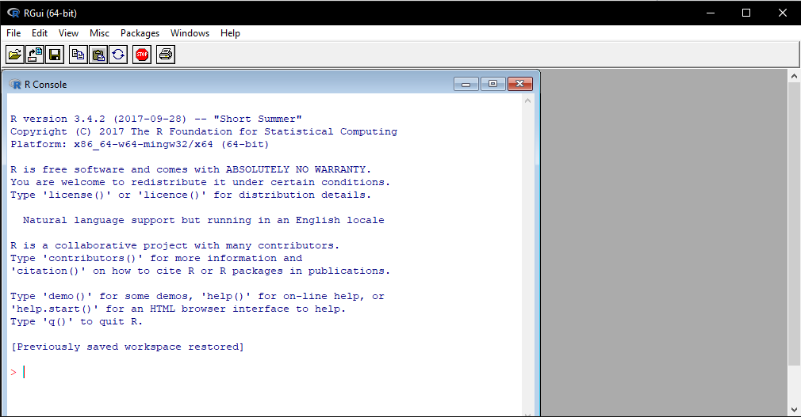

3 R vs RStudio
3.1 R vs RStudio
One of the first sticking points for a lot of people is figuring out the difference between R and RStudio. R is a free and open source programming language for statistical computing. RStudio is a free and open source integrated development environment (IDE) for R. R is the engine and can be interated with directly. RStudio is an interface through which we use R that provides a wide array of additional functionality to improve the user experience.
3.2 R
If you open R you will be greeted with a rather basic interface. You can enter commands to run, but if you want to create a script to save the commands for an analysis you need to have a separate text editor program open. For your own research you are much better off interacting with R via the RStudio interface.
 ***
3.3 RStudio
RStudio is a nicer interface to the R language that provides enhanced functionality. Upon opening RStudio you will be greeted with the typical four pane set-up.
The default layout of these four panes are:
- Bottom left: This is the Console. This is equivalent to having an R session open and is where you can interactively run R code. You can run code here by pressing Enter/Return
- Top left: This is the Script Editor. This is a text editor that allows you to write and save your code. You can run code here using either the Run button or Ctrl+Enter/Cmd+Return
- Top Right: This is the Environment. This is where your saved variables are stored. You can also access the History tab to see your previously run commands
- Bottom Right: This is the Files/Plots/Packages/Help/Viewer pane. At this stage the only things you need to know about this pane are that your generated plots show up here and, most importantly, you can go here for help.
3.4 Work flow within RStudio
There are two main ways one can work within RStudio.
- Test and play within the interactive
Rconsole then copy code into - a
.Rfile to run later.- This works well when doing small tests and initially starting off.
- It quickly becomes laborious
- Start writing in an
.Rfile and useRStudio’s command / short cut to push current line, selected lines or modified lines to the interactiveRconsole. - This is a great way to start; all your code is saved for later
- You will be able to run the file you create from within
RStudioor usingR’ssource()function.